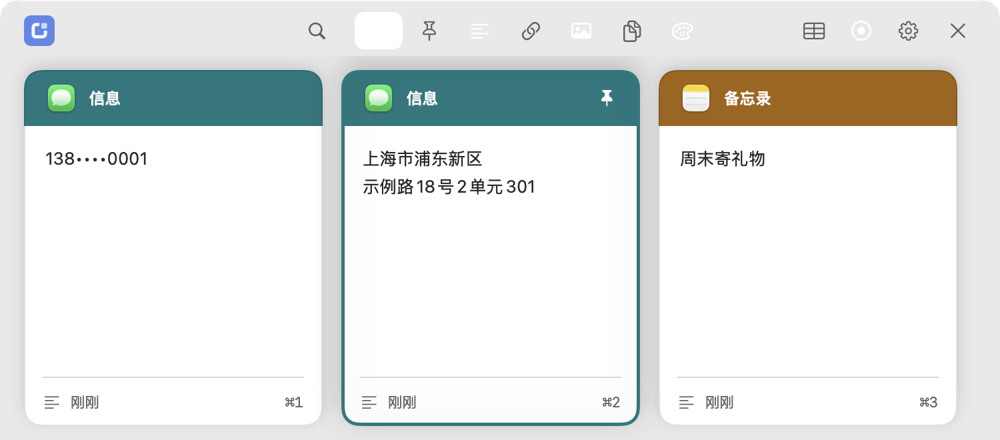
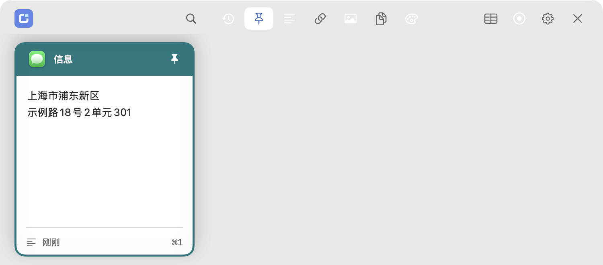
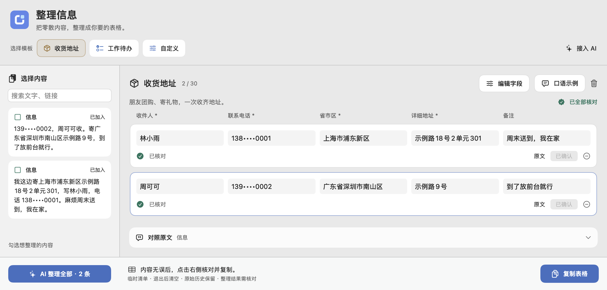

GET STARTED
让拾贴，
顺手起来。
从复制、收藏开始。需要时，再接上 AI。
开始使用
装好拾贴，复制一条内容
打开安装包，将拾贴拖进「应用程序」并启动。连续复制地址和电话，再从菜单栏打开拾贴，就会看到两张历史卡片。
 拾贴应用程序
拾贴应用程序双击填入，下次接着用
把光标放回收货地址栏，用设置中的快捷键唤出拾贴，双击地址卡片即可填入。鼠标移到卡片上，点标题栏的图钉即可收藏。
看看历史与收藏的样子




接入 AI
本地 / 云端先试试本地模型。在「更多功能 → 接入 AI」选择「在这台 Mac 上运行」。
打开 Ollama
第一次用，点向导里的下载按钮并安装。已经装好，直接点「打开 Ollama」，再检测连接。
下载模型
点「填入终端」，核对下面的命令后按回车。
ollama pull qwen3.5:4b看到
success，回拾贴刷新模型并选中它。测试并保存
点「发送测试问候」。收到回复后选「保存并设为默认」，就可以在「整理信息」里试用。
选择本机模型
选中的原文在这台 Mac 上处理。
也可以连接云端
确认后，将所选原文、字段和候选结果发送至该服务。
已有云端模型？查看连接步骤
选择连接云端模型
打开「更多功能 → 接入 AI」，选择「连接云端模型」。
填入服务方提供的信息
按服务方说明选择 OpenAI 兼容或 Claude 格式，再填写服务地址、API 密钥和模型名称。服务地址可填 Base URL 或完整接口地址，请从 API 接入文档复制。
测试连接，保存后使用
点「发送测试问候」，收到回复后选「保存并设为默认」。云端调用可能按服务方规则计费。
试一次：把收货信息整理成清单
选「收货地址」模板，勾选每位朋友各自的一条消息，点「AI 整理」。如需模型处理，先确认发送内容，再点「继续整理」。有不同结果时，对照原话选定详细地址，最后点「核对并复制」。


截图与识字
用设置中的截图快捷键框选区域，在选区旁复制或保存图片。需要文字时点「识字」。首次区域截图，按系统提示开启屏幕录制权限。
查看识字界面

历史和收藏
历史，留在这台 Mac
历史加密保存在本机，按设置的天数和条数清理。
收藏，留住常用内容
收藏会跳过这项自动清理，常用内容随时可取。
正常升级只替换应用，保留历史、收藏和设置；普通历史仍按你设置的期限与数量清理。升级前正常退出拾贴，再将新版拖入「应用程序」并选择替换。不要用清理工具删除应用数据或钥匙串密钥。重要内容可在设置中导出加密备份。